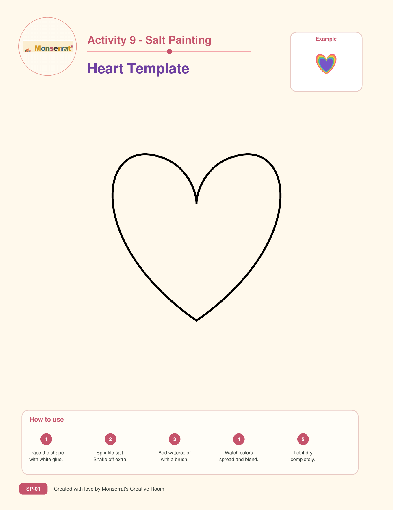

🍂 Seasonal Activities
Creative ideas for holidays, seasons, celebrations, and special family moments.
Welcome to the
A warm space for crafts, art activities, printable projects, and creative ideas families can enjoy together.
Creative ideas for holidays, seasons, celebrations, and special family moments.
Ages 3–12
Collect a few fallen leaves on a walk, place them under a sheet of paper, and rub a crayon sideways across the surface to reveal each leaf's veins and shape. A simple way to explore texture, patterns, and the outdoors together.
Ages 3–5
Using mini pumpkins (real or drawn), practice counting, sorting by size, or simple addition — "if we have 3 big pumpkins and 2 small ones, how many altogether?" A hands-on way to mix seasonal fun with early math.
Simple, beautiful projects using materials families may already have at home.
Ages 3–12
Watch color spread along raised lines of salt to make a textured painting.

🖨️ Download the Salt Painting PackAges 3–12
Create colorful spinning masterpieces while learning about motion, symmetry, and color mixing.
🖨️ Download the Spin Art PackAges 3–12
Create colorful animal masks using paper plates and simple craft supplies. This activity encourages imagination, storytelling, and fine motor skills.
Ages 3–12
Create a colorful window decoration using tissue paper and contact paper. Children can explore color, light, transparency, creativity, and fine motor skills.
📄 Download the Tissue Paper Suncatcher GuideAges 4–12
Build an imaginative robot using recycled materials from around your home. Children explore creativity, engineering, problem-solving, and imaginative play while giving everyday objects a new purpose.
📄 Download the Recycled Robot Challenge GuideAges 5–12
Make paper puppets and bring a story to life with light and shadows.
Printed puppet cutouts, scissors, tape, craft sticks, a flashlight, and a light-colored wall.
Offer pre-cut puppets or thicker handles. Your child can choose a character, make sound effects, move a puppet, or tell the story.
Ages 2–12
Start with red, yellow, and blue. See how many new colors you can mix for your rainbow.
Red, yellow, and blue watercolors, a brush or sponge, watercolor paper, and a cup of water.
Start with just two colors and mix one new shade together. Offer a sponge or a thick-handled brush, and say the color names aloud as you mix.
Ages 2–5
What shape does an apple leave on paper? Try stamping with fruit to make prints and patterns.
An apple or pear, washable paint, a paper plate, and paper. Have a grown-up cut the fruit in half.
Start with one color and tape the paper to the table if it slides. Your child can stamp with you or point to where they want the next print to go.
Ages 2–8
Turn leaves and other finds from a nature walk into a picture.
Fallen leaves, petals, or small twigs, plus construction paper, glue, and markers.
Offer two large leaves to choose from, or draw a path they can fill with leaves. Your child can point to where each piece goes while you handle the glue.
Try painting a background first. When it dries, add your leaves to make a garden or a forest.
Ages 2–8
Draw with a white crayon, then paint over the paper to reveal your hidden picture.
A white crayon, watercolor paper, watercolor paint, a brush, and a cup of water.
Offer a thick crayon, tape the paper to the table, or draw a shape for your child to reveal. They can choose the paint color by pointing or telling you.
Make a secret picture for someone else to reveal.
Ages 2–5
Make a dark paper shape stand out against a bright watercolor background.
Black construction paper, watercolor paper, watercolors, a brush, a cup of water, a pencil, scissors, and glue.
Offer two large, pre-cut shapes to choose from. Your child can point to where the shape goes, then paint with a sponge or a thick-handled brush.
Repeat the same shape across the page and paint a different color around each one.
Ages 2–12
Catch colorful bubbles on paper and see what patterns they leave behind.
Bubble solution, washable paint, shallow cups, a bubble wand, white cardstock, and a towel to cover the table.
Let your child choose the colors, hold the paper flat, or watch the bubbles pop. Start with one color and a few bubbles at a time.
When the prints are dry, draw stems under the rings to turn them into a bubble garden.
Ages 2–12
Tilt a box and watch a rolling ball leave colorful trails.
A shallow cardboard box, paper, tape, washable paint, and a smooth, age-appropriate ball or a marble.
Start with one color. Hold the box together, or let your child point to which side to lift. For children under 3 or children who put objects in their mouths, use a large, age-appropriate ball and keep marbles and small balls out of reach.
Look at your finished trails. Do they remind you of rivers, roads, or something else?
Ages 2–12
Use your hands to make colorful shapes, patterns, and pictures.
Washable finger paints, thick white paper, apron or old shirt, baby wipes or damp cloth, newspaper or table cover.
Offer a sponge or a brush, or start with two colors.
Grown-up help: Use only non-toxic, washable finger paints. Adult supervision is recommended, especially with younger children. Wash hands thoroughly after the activity.
Ages 2–12
Slide colorful ice across paper and see the trails it leaves as it melts.
Ice cube tray, water, washable paint or food coloring, popsicle sticks (optional), white paper or cardstock, tray or towel.
Offer a paint stick handle or lightweight gloves if cold feels uncomfortable.
Grown-up help: Use only non-toxic coloring materials. Dry any wet floors immediately to prevent slipping. Adult supervision is recommended.
Ages 3–10
Turn a cardboard box into a guitar and compare the sounds the bands make.
Empty tissue box or cereal box, cardboard paper towel tube, 4–6 rubber bands of varying thicknesses, scissors, tape or glue, pencil or craft stick.
Let your child decorate the box or choose the order to pluck the bands.
Grown-up help: An adult handles sharp tools and hot glue. Keep loose rubber bands out of reach of children who may mouth them.
Ages 5–8 and up
Fold and fluff layers of tissue paper to make a colorful decoration.
8–10 sheets of tissue paper, floral wire or a pipe cleaner, sharp scissors for adult use, hanging string.
Try contrasting colors to make the layers easier to see, or have an adult separate the first layer.
Grown-up help: An adult handles sharp scissors and wire and hangs the finished decoration out of children’s reach.
A few of our favorite outside sources for arts & crafts ideas — perfect for extra inspiration between MCR activities.